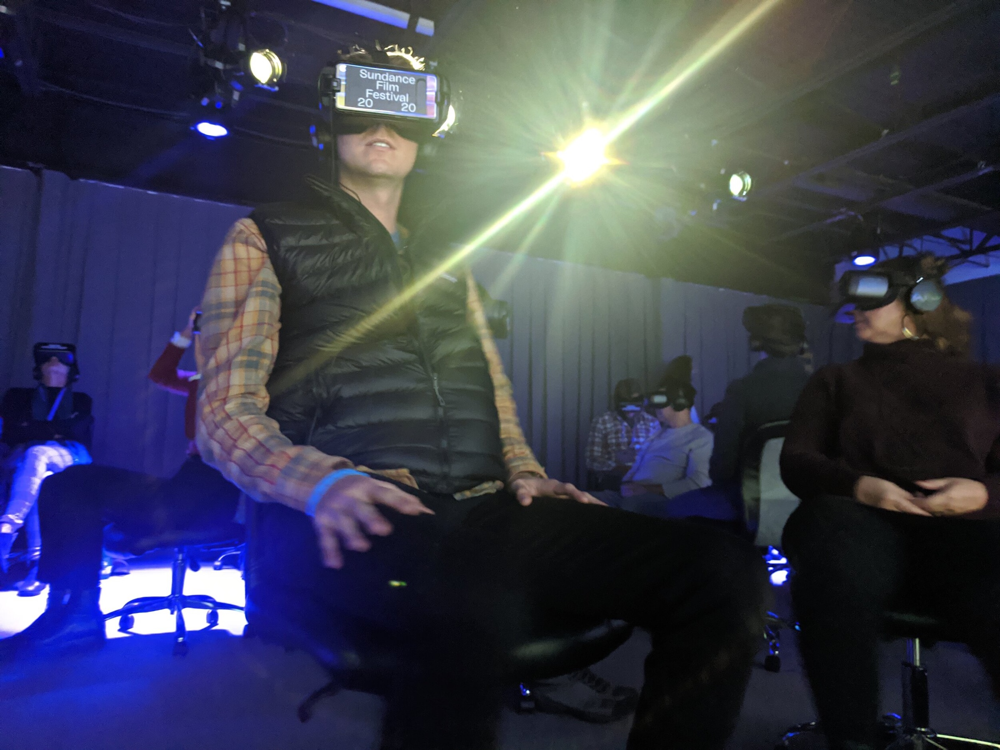

After The Fallout
This unforgettable 360-degree experience pushes past traditional documentary tropes to evoke the reality and emotional gravity of life in Fukushima, ten years after the 2011 nuclear disaster. Since 2017, award-winning immersive director Sam Wolson has been working with Dominic Nahr to create a new style of documentary 360 film about the Fukushima Fallout.
After the Fallout is an immersive mosaic that takes us through surreal environments in the exclusion zone, photogrammetry recreations of the Fukushima Daiichi Nuclear Power Plant control room, and explores the lives of families as they navigate a new world which they have had to adapt to.
After The Fallout premiered at Sundance in 2020 and then continued to festivals around the world including SXSW and CPH:DOX.
